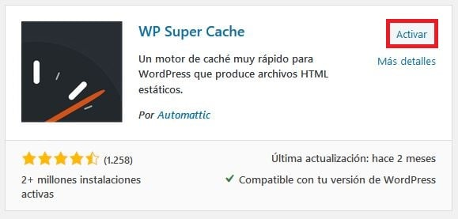

WordPress es una de las mejores herramientas para la creación de sitios web en el mercado actual, ya que representa el 39,5%de todos los sitios web. Aunque es conocido principalmente por sus blogs, este sistema de gestión de contenidos (CMS) gratuito puede servir para una gran variedad de sitios web, como tiendas de comercio electrónico, portafolios y portales de información.
En este artículo exploraremos las ventajas de WordPress. ¡Empecemos!
WordPress es un sistema de gestión de contenido(CMS) que te ayuda a crear y administrar tu sitio web.
Con esta plataforma, puedes editar y publicar tu contenido sin tener que preocuparte mucho por el código. Así que es ideal tanto para principiantes como para usuarios avanzados.
Ten en cuenta que WordPress.com es diferente de WordPress.org. WordPress.org es la versión original y más utilizada de WordPress. Es un CMS gratuito y de código abierto que tiene todas las características necesarias para construir todo tipo de sitios web.
Dado que esta versión de WordPress es auto-alojada, tienes que registrarte en un servicio de alojamiento y comprar un dominio web primero antes de lanzar el sitio web.
Hostinger ofrece planes de alojamiento compartido desde €1.49 por mes, que son ideales para quienes se inician en el mundo de los sitios web. Además de ser asequibles, estos planes te brindan todas las herramientas necesarias para aprender cómo crear una página web sencilla.
Todos los planes de alojamiento compartido incluyen un certificado SSL gratuito. Los planes Premium y Empresarial incluyen el nombre de dominio gratis durante el primer año.
También puedes optar por nuestro plan de hosting WordPress para obtener funciones y herramientas optimizadas especialmente para WordPress, como un instalador de WordPress de un solo clic.
A continuación, repasaremos 7 de las principales ventajas de WordPress, como su instalación sencilla y su versatilidad en la creación de sitios web. ¡Vayamos a ello!
WordPress es un software de código abierto. Esto significa que el código fuente está disponible para todos. Las personas de todo el mundo pueden estudiar, modificar y probar WordPress. Además pueden contribuir informando errores y solucionando problemas si lo desean.
WordPress tiene una comunidad muy activa que trabaja arduamente para mejorar la plataforma con cada nueva versión.
WordPress es muy amigable para los principiantes, con su famoso asistente de instalación de cinco minutos. ¡La configuración es fácil y no requiere habilidades técnicas!
Además, la mayoría de los proveedores de alojamiento, como Hostinger, ofrecen una instalación con un solo clic. Todo lo que tienes que hacer es presionar un botón y escribir unas pocas líneas de información personal.
Aunque inicialmente se desarrolló como una plataforma de blogs, WordPress ha ido evolucionando a lo largo del camino. Hoy en día, puedes usarlo para crear cualquier tipo de sitio web. Aquí te dejamos algunos ejemplos de los sitios que puedes crear con WordPress:
La facilidad de personalización es una de las razones principales por las que la gente usa WordPress.
Un plugin, o add-on, es un software con un conjunto de funciones. Los administradores de sitios web instalan plugins en su sitio de WordPress para ampliar su funcionalidad y añadirle nuevas características.
Los plugins de WordPress vienen en versiones gratuitas y premium. El directorio de plugins de WordPress ofrece más de 50.000 plugins gratuitos y freemium para diferentes propósitos.
También puedes acceder a los sitios web oficiales de los plugins freemium para comprar su versión premium. Muchos mercados como CodeCanyon y Codester también venden plugins.
Para instalar un plugin de WordPress desde el directorio de temas de WordPress, sigue estos pasos:

Si quieres posicionarte bien en los motores de búsqueda, debes ponerle atención el SEO (optimización para motores de búsqueda) de tu sitio. WordPress ofrece varios plugins y funciones para ayudarte a mejorar el SEO de tu sitio web.
Ignorar el SEO traerá como resultado poco tráfico. Ya sea que tengas un blog o un negocio, tu objetivo siempre debe ser llegar a la mayor cantidad de gente posible.
Los plugins como Yoast SEO y All in One SEO Packson excelentes para garantizar que el contenido de tu sitio web esté optimizado para SEO.
WordPress fue creado con la seguridad en mente. Su equipo trabaja duro para mantener la seguridad de la plataforma. Pero si buscas seguridad extra, además de la que viene incorporada, hay excelentes plugins con funciones más avanzadas que puedes agregar. Estos son algunos de los plugins que te recomendamos:
Ten en cuenta que mantener WordPress actualizado es siempre la mejor idea. La seguridad de la plataforma mejora constantemente, por lo que cada nueva versión es más segura que la anterior.
WordPress admite archivos multimedia como .jpg, .png, .gif, .mp3, .mp4, .pdf, .doc y más. Puedes cargar casi cualquier tipo de archivos a través del cargador de medios integrado.
Además, el editor Gutenberg es excelente para generar contenido con muchos archivos multimedia. Puedes arrastrar y soltar fácilmente los archivos en tus publicaciones.
WordPress también soporta oEmbed como incrustación de YouTube. Si quieres insertar videos de YouTube en tus publicaciones, simplemente haz clic en el botón + del bloque específico, luego elige el menú de inserción e inserta el enlace.
Si bien es gratuito y de código abierto, las ventajas de WordPress son muchas. Para los principiantes, lo mejor es su fácil instalación y excelente seguridad.
Con WordPress, puedes crear cualquier sitio web, desde tiendas de venta en línea hasta páginas oficiales del gobierno, y tiene vastas colecciones de plugins para aumentar aún más la funcionalidad de tu sitio.
Hay muchos recursos disponibles para guiar tu experiencia de aprendizaje sobre WordPress, como nuestra colección de tutoriales. Revísalos y aprende todo sobre este genial gestor de contenidos.